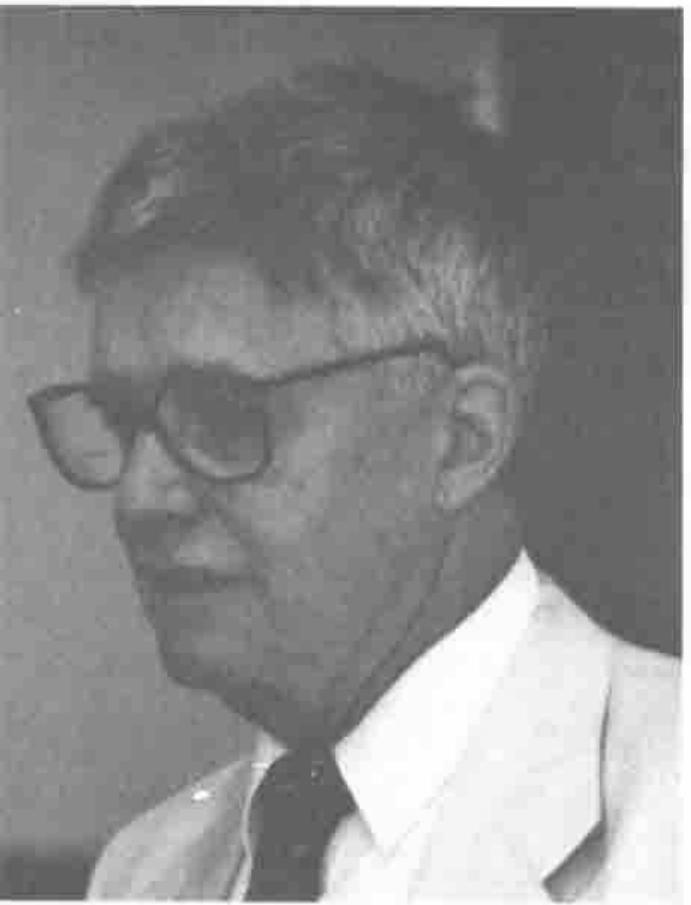

Panel “25 Year Perspective”
Vector 8:2, page 81
Transcribed from the printed issue; not yet reviewed. Read it in the PDF of the issue, page 81
This panel was moderated by Roy Sykes. Vin Grannell paid for it to be recorded on video; I fear the recording will reveal many deficiencies in this report.
Adin Falkoff began. He put up a foil of IBM APL Systems and went through some 15 versions of APL, beginning with the Personal Array Transactor on the 1620 and ending with APL2.
John McPherson was the man who made IBM’s first personal computer, the 5100, an APL machine. Not many people know that the modern PC started life as product no 5151. John ran the Systems Research Institute in New York and recalled Ken and Adin coming there to teach systems engineers. John Lawrence gave APL its first exposure in the IBM Systems Journal. Phil Abrahams, here at Stanford, described an APL machine in his 1969 thesis. Phil worked with Larry Breed on a ForTran punched card version that we would recognise as APL.
Another early version mentioned was one by Joe Harry, a part time programmer, but it never got finished.
In 1963 someone (Herb Hellerman?) argued he should write an APL for personal computing and was given the use of a 1620 with 20,000 digit memory and selectric I/O. He introduced scalar extension but only achieved a small subset with the restriction that each line could only execute one function. Lyle Heath wrote a batch version for the 7090. Iverson taught evenings and brought a student to help: it was Larry Breed. Herb Hellerman left IBM in 1969 to join SUNY: he is now at Amdahl.
Larry Breed introduced Roger Moore to computing on the IBM 650. George Forsyth of the Math Dept took people to a seminar at IBM’s Systems Research Institute and remembers Roger ‘muttering for days afterwards how wonderful it would be … ..’. At Stanford Mike Montalbano was enthusiastically teaching Iverson notation and introduced Larry to Ken. Gene Amdahl was at Stanford in 1964-5: he was IBM’s lead architect on the IBM 360 and his article on 360 architecture was in the same Systems Journal that included the APL description of the 360.
Larry went to Yorktown and got to play with PAT. The notation was just moving from paper into the computer and having to write on a single line was a new problem. Function definition was introduced by an F overstruck with a tilde.
Larry recalled that IBM was scared of timesharing and they instructed the programmers to put in a minimum response time of five seconds on the grounds that less would frighten the users. Roger Moore was recruited as a consultant from I P Sharp. Larry mentioned three ideas the implementers resisted:
- use of max and min symbols instead of AND and OR.
- use of monadic less than and greater than for sine and cosine (Larry thought this was an idea of Ken’s).
- implementing vector constants delimited by spaces (originally they had to be laminated/catenated with the comma). [I think this was where Larry said the implementers admitted they were wrong.]
Larry said "Ken Iverson loves arguments: I think I got hired by arguing with him". He also remembered a soft spoken guy called Gene (who didn’t get into the arguments) who surprised him by remarking that apl is the Greek root that means simple but not yet fully formed, and who joined him playing with the golden mean. During this time Larry felt he merged APL with the most delightful part of mathematics. He said, wistfully, that he began his career at the top.
Gene McDonnell was a salesman for the IBM time-sharing service. Roy Sykes reckons he has contributed more functions in less characters than anyone else in APL.
Gene said that when Dante was 35 in 1300, he wrote the divine comedy: when Gene was 35 in 1961 he began writing APL and hasn’t stopped yet. He still has Ken’s hectograph notes from the Systems Research Institute’s course he attended. He found APL congenial and saw that it addressed fundamentals beyond the scope of the typical accountant’s imagination. He remembers Ken teaching on 26 September 1962 when the first box of copies of A Programming Language was delivered to the class room; he reckons he got the first copy out of the box. Gene claims his contribution to APL\360 was the signoff command )OFF. Arthur Watson was exposed to BASIC at Hotchkiss (a private school at Lakeville Connecticut) and went back to Armonk saying "We want something like this." and by good fortune Iverson’s notation was the obvious candidate; it WAS ‘invented here’.
Gene recalls the quality of the implementation was really high because success depended on its reliability.
Roger Moore’s real claim to fame was the six space prompt on the time-sharing system.
Roger said that when he joined (working on ForTran) the time taken to compile one statement was about the same as the mean time between failure. Timesharing was the obvious way to use up the expensive computer processor’s spare capacity while it was printing core dumps. He looked at the printer driver with a view to timesharing it and was so appalled that he decided APL should be stand-alone, i.e. complete with its own operating system. One cylinder of the disk drive was 36K and so that was the original maximum workspace limit. The terminals (1050 and 2741) were half-duplex and the test for response was, after clearing the tabs, to press TAB, 2 RETURN - if the response was good the 2 would print before the carriage had returned to home. Roger said that Luther Woodram was responsible for the grade up and grade down overstrikes and Dick Lathwell for the design of the shared variables.
Before SigAPL, before STAPL there was Garth Foster. In 1966 Garth was hired by Syracuse to be a service engineer and was given the job of liaising with Yorktown Heights on APL. Garth was invited to Share by Karl Korn and volunteered to do a newsletter SHARE APL\360. Number 1 was April 1969. In 1968 he wrote a position paper recommending Syracuse to buy a 360 provided they could have APL on it. Otway Pardee placed the order with perfect timing so that it could not be reviewed or countermanded by the university top brass.
Roy Sykes introduced Ken Iverson with the words of Otway’s successor at Syracuse: "There’s little I can say that Iverson won’t".
Ken said he clearly couldn’t take time to refute all the errors in the stories we’d heard that morning. He recommended we consult the sources: A Source Book in APL, Quote-quad, the Early Years, Gene McDonnell’s article on Vector notation, John Clark’s film and George Mendonsa’s museum.
But he couldn’t allow Larry Breed to get away with the ludicrous assertion that the implementation team ever admitted error.

Ken Iverson
Ken applauded the far-sightedness of Howard Aiken who, realising that computing had to move out of universities into the real world, began to run an Automatic Data Processing course to train the people who would make the move. Ken was one of four graduate students who helped to run the course. He found that the first thing he needed was a matrix algebra language. After three years teaching and inventing notation as he went, he tried to reduce the bulk of the notation by generalising it. Herb Hellerman encouraged him to be ruthless culling dispensable material. Another culling followed during implementation. "But success brings paralysis: you get to the point where you can’t get anything changed. Even switching companies doesn’t help much." Ken said time does cull things ruthlessly and people earning a living at APL are particularly reluctant to cull. As Peter de Vries wrote "Time wounds all heels."
We were asked to remember three dead pioneers: Reyner Cogan, Mike Montalbano and Bill Bergquist. Ken felt it was users such as Stephen Jaffe and Donald McIntyre who would ensure the survival of the notation by using it to conquer new fields. He recommended us to be motivated by practical problems, implement them in APL and only then consider whether more change was needed.